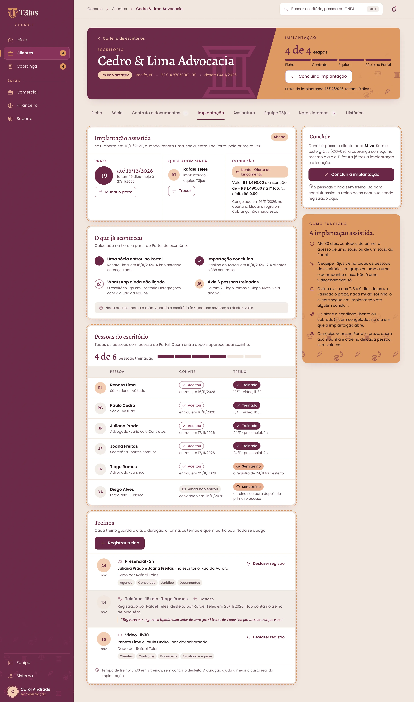
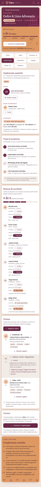

Aberta, faltam 19 dias
Cabeçalho com o prazo e os dias que faltam num disco, quem acompanha (Rafael Teles) com “Trocar”, “Mudar o prazo” e a condição congelada na abertura (isenta, Oferta de lançamento: R$ 1.490,00 e a isenção, efeito R$ 0,00). “O que já aconteceu”, calculado do Portal, sem nada marcado à mão. As 6 pessoas com o aceite do convite e o treino, “4 de 6 treinadas”, e os treinos com o meio, a duração e quem deu.
Abrir: ficha.html?aba=implantacao&estado=im-aberta (estreite a janela para ver o celular)